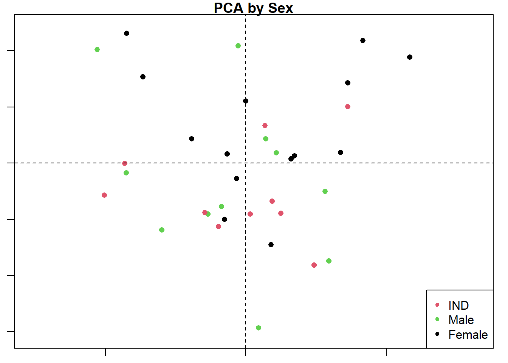
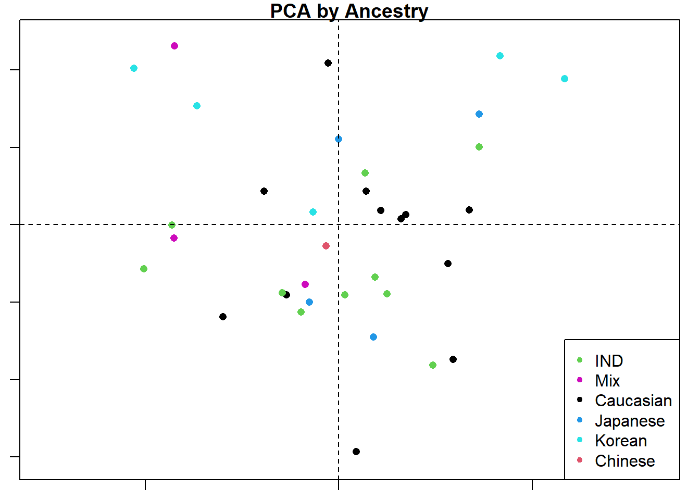
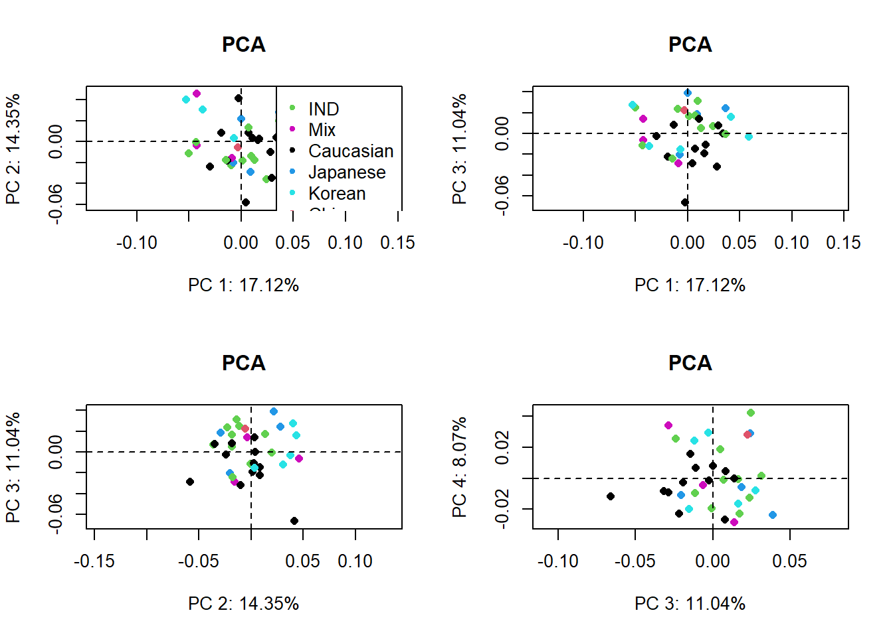

This page is still in progress. From the data obtained via SlicerMorph and the step described on the processing page, I am running ANOVA and PCA analyses. Running the statistics and understanding the superficial insights is pretty straightforward. Some of the more detailed analysis, however, still need to be worked out.
This markdown file utilizes codechunks.
Load needed packages
Show the Code
require(geomorph) #for GM analysisrequire(SlicerMorphR) #for importing Slicer datarequire(plyr) #for wireframe specsrequire(dplyr) #for data processing/cleaningrequire(tidyr) #for data processing/cleaningrequire(skimr) #for nice visualization of data require(knitr) #for qmd buildingrequire(gapminder) #for plot aesthetics
Importing Data
The files used in this analysis were produced in the processing code (SLprocess.r) illustrated in the Data Processing page on this website. The files listed below represent only the material thus far used. More data may be added as this project continues.
The primary statistical approach first applied is a Principal Components Analysis. The next three plots below illustrate the initial results of PC1 by PC2, followed by color coded modifiers to visualize how the plotted variation relates to the sample demographics.
SlicerMorph.MS <-read.table(file =paste(SMlog$output.path, SMlog$MeanShape,sep="/"),sep=",", header =TRUE, row.names=1)plot(d1.pca, main ="PCA by Sex",col=d1$Sex,pch=16)legend("bottomright", pch =20, col=unique(d1$Sex), legend =unique(d1$Sex))

Show the Code
plot(d1.pca, main ="PCA by Ancestry",col=d1$Ancestry,pch=16)legend("bottomright", pch =20, col=unique(d1$Ancestry), legend =unique(d1$Ancestry))

The collage below shows the original PC1 by PC2 compared with analyses by three different planes. Unsurprisingly, the original analysis shows the most variation and the strongest clustering by ancestry. This collage also labels the PC axes for me which I haven’t figured out how do yet for the larger plots. Everything is still a work in progress.
Show the Code
par(mfrow=c(2,2))plot(d1.pca, main ="PCA",col=d1$Ancestry,pch=16)legend("topright", pch =20, col=unique(d1$Ancestry), legend =unique(d1$Ancestry))plot(d1.pca, main ="PCA",axis1=1, axis2=3,col=d1$Ancestry,pch=16)plot(d1.pca, main ="PCA",axis1=2, axis2=3,col=d1$Ancestry,pch=16)plot(d1.pca, main ="PCA",axis1=3, axis2=4,col=d1$Ancestry,pch=16)

ANOVA
Show the Code
# 1. Build the data frame (Explicitly mapping Coords = PD)gdf <-geomorph.data.frame(Coords = PD,Ancestry = d1$Ancestry,Sex = d1$Sex,Csize = d1$centroid)# 2. Fit the primary interaction model lm.fit <-procD.lm(Coords ~ Ancestry * Sex, data = gdf)# 3. Fit the Allometry + Interaction modellm.allometry <-procD.lm(Coords ~ Csize + Ancestry * Sex, data = gdf)# ==========================================# POLISH TABLE 1: Baseline Interaction Model# ==========================================anova_fit_raw <-anova(lm.fit)anova_fit_df <-as.data.frame(anova_fit_raw$table)anova_fit_df[is.na(anova_fit_df)] <-""# Strip NA spacescolnames(anova_fit_df) <-c("Df", "SS", "MS", "Rsq", "F", "Z (Effect Size)", "P-Value")knitr::kable( anova_fit_df,caption ="Procrustes ANOVA: Shape Variation Accounted for by Ancestry and Sex Interaction",digits =c(0, 4, 4, 4, 3, 3, 4), align ="rcccccc")
Procrustes ANOVA: Shape Variation Accounted for by Ancestry and Sex Interaction
Procrustes ANOVA: Shape Variation Accounted for by Size (Allometry), Ancestry, and Sex
Df
SS
MS
Rsq
F
Z (Effect Size)
P-Value
Csize
1
0.0001
6.86552534875859e-05
0.0527833024916868
2.22972734294804
1.01029335115098
0.161
Ancestry
5
0.0004
8.97785496981732e-05
0.345116222376229
2.91575191851026
1.76043723647787
0.042
Sex
1
0.0000
4.62110091681289e-06
0.00355277935986138
0.150080213025549
-0.580688338896679
0.711
Ancestry:Sex
2
0.0000
4.379637653186e-06
0.00673427676132309
0.14223817306682
-1.16749405802209
0.877
Residuals
25
0.0008
3.0790873917711e-05
0.5918134190109
Total
34
0.0013
Morphological Disparity
Show the Code
# 1. Build the data frame using PD directly for coordsgdf <-geomorph.data.frame(coords = PD,Ancestry = d1$Ancestry,Sex = d1$Sex,Csize = d1$centroid)# 2. FIX: Capture and hide the calculation progress text completelyinvisible(capture.output( shape_disp_ancestry <-morphol.disparity(coords ~ Ancestry, groups =~ Ancestry, data = gdf, iter =999) ))# 3. CREATE TABLE 1: Procrustes Variances per Ancestry Groupdisp_variance_df <-data.frame(Ancestry =names(shape_disp_ancestry$Procrustes.var),`Procrustes Variance`=as.numeric(shape_disp_ancestry$Procrustes.var))knitr::kable( disp_variance_df, caption ="Morphological Disparity (Procrustes Variance) by Ancestry Group",digits =6,align ="lc")
Morphological Disparity (Procrustes Variance) by Ancestry Group
Ancestry
Procrustes.Variance
Caucasian
3.4e-05
Chinese
0.0e+00
IND
2.0e-05
Japanese
1.3e-05
Korean
2.7e-05
Mix
1.8e-05
Show the Code
# 4. CREATE TABLE 2: Pairwise P-Values Matrix (Cleaned Academic Triangle)disp_p_matrix <- shape_disp_ancestry$PV.dist.Pval# Safe check to ensure the matrix cleared out properly before renderingif(!is.null(disp_p_matrix)) { disp_p_matrix[upper.tri(disp_p_matrix, diag =TRUE)] <-"" disp_p_table <-as.data.frame(disp_p_matrix) knitr::kable( disp_p_table, caption ="Pairwise P-Values for Differences in Morphological Disparity Across Ancestries (Alpha = 0.05)",align ="c" )}
Pairwise P-Values for Differences in Morphological Disparity Across Ancestries (Alpha = 0.05)
Caucasian
Chinese
IND
Japanese
Korean
Mix
Caucasian
Chinese
0.176
IND
0.259
0.51
Japanese
0.18
0.698
0.671
Korean
0.669
0.352
0.692
0.473
Mix
0.404
0.534
0.904
0.814
0.674
Morphological Disparity by Ancestry
Show the Code
# 1. FIX: Capture and hide the calculation progress text completelyinvisible(capture.output( ancestry_variance <-morphol.disparity( Coords ~ Ancestry, groups =~ Ancestry, data = gdf,iter =999 ) ))# 2. Extract the variance vectorancestry_vars <- ancestry_variance$Procrustes.var# 3. Generate the barplot for Ancestrypar(mar =c(8, 4, 3, 1)) barplot( ancestry_vars, col ="tomato", las =2, main ="Morphological Disparity by Ancestry",ylab ="Procrustes Variance")
Format Tables for Quarto
Show the Code
# 1. Capture the console summary text to hide the progress statementinvisible(capture.output(summary_table <-summary(ancestry_variance)))# 2. CREATE TABLE 1: Procrustes Variances per Ancestry Groupvariance_df <-data.frame(Ancestry =names(ancestry_variance$Procrustes.var),`Procrustes Variance`=as.numeric(ancestry_variance$Procrustes.var))knitr::kable( variance_df, caption ="Morphological Disparity (Procrustes Variance) by Ancestry Group",digits =6,align ="lc")
Morphological Disparity (Procrustes Variance) by Ancestry Group
Ancestry
Procrustes.Variance
Caucasian
0.000802
Chinese
0.000000
IND
0.000904
Japanese
0.001083
Korean
0.001097
Mix
0.001134
Show the Code
# 3. CRITICAL FIX: Pull the pairwise P-values matrix straight from the source objectp_matrix <- ancestry_variance$PV.dist.Pval# 4. Clean up the matrix layout for markdown rendering# This drops the redundant duplicate upper triangle safelyp_matrix[upper.tri(p_matrix, diag =TRUE)] <-""p_table_clean <-as.data.frame(p_matrix)# 5. CREATE TABLE 2: Pairwise P-Values Matrixknitr::kable( p_table_clean, caption ="Pairwise P-Values for Differences in Morphological Disparity (Alpha = 0.05)",align ="c")
Pairwise P-Values for Differences in Morphological Disparity (Alpha = 0.05)